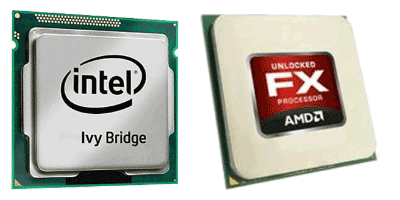

Тактовой частотой называют параметр, который измеряется в гигагерцах, к примеру, 2,21ГГц говорит о том, что конкретный процессор в течение одной секунды способен выполнить 2 216 000 000 операций. Таким образом, более высокая таковая частота позволяет быстрее обрабатывать данные. Это один из важнейших параметров, на который следует обращать внимание, выбирая процессор.
Не менее важно и число ядер, дело в том, что тактовую частоту на данном этапе развития больше увеличить нельзя, это побудило производить продолжить развитие в направлении параллельных вычислений, выражающемся в увеличении количества ядер. Число ядер информирует о том, какое количество программ можно запустить одновременно, не теряя быстродействие. Однако стоит учитывать, что в случае оптимизации программы под два ядра, то даже при их большем количестве, компьютер не сможет их полноценно использовать.
[ содержание ]
Частота шины демонстрирует скорость передачи входящей и исходящей из процессора информации. Чем больше этот показатель, тем обмен информацией происходит быстрее, в качестве единиц измерения здесь выступают гигагерцы. Большую значимость имеет кэш процессора, представляющий собой высокоскоростной блок памяти. Он располагается непосредственно на ядре и служит для повышения производительности, так как в нём данные обрабатываются со значительно большей скоростью, чем в случае с оперативной памятью.
Есть три уровня кэш памяти:
[ содержание ]
Менее значимыми, но от того не теряющими актуальность при выборе процессора являются такие характеристики как сокет и тепловыделение. Сокетом называют разъём, куда устанавливается процессор в материнской плате, к примеру, если на маркировке процессора представлен сокет АМЗ, то нужна соответствующая материнская плата с идентичным сокетом. По показателям тепловыделения можно определить степень нагревания процессора в ходе работы. Это будет прямым указанием к выбору соответствующей системы охлаждения. Данный показатель измеряют в ватах, и он варьируется в пределах 10 – 165Вт.
Такая характеристика, как поддержка разнообразных технологий, определяет набор команд, предназначенных для улучшения производительности, к примеру, это может быть технология SSE4.Она представляет собой набор из пятидесяти четырёх команд, призванных увеличивать производительность процессоров в процессе работы с медиа контентом, игровыми приложениями задачами трёхмерного моделирования.
Масштаб технологий, определяемый размером полупроводниковых элементов, называется техническим процессом. Полупроводниковые элементы составляют основу внутренней цепи процессора, состоящей из транзисторов, которые соединены между собой соответствующим образом. В ходе совершенствования технологий и пропорционального уменьшения в размерах транзисторов, повышаются рабочие характеристики процессоров. К примеру, ядро Willamette, выполненное в соответствии с техпроцессом 0.18 мкм, обладает 42 000 000 транзисторов. В это же время ядро Prescott, соответствующее техпроцессу 0.09 мкм, располагает 125 000 000 транзисторов.

[ содержание ]
Попробуем применить полученные знания на практике и сравнить два современных процессора, в качестве примера рассмотрим AMD FX-8150 Zambezi и Intel Core i5-3570K Ivy Bridge. В данном случае AMD может похвастаться более высокой тактовой частотой в 3600МГц, в то время как Intel ограничивается 3400ГГц. Это характеризует AMD как более быстродействующий процессор. Что касается количества ядер, то здесь AMD опять же лидирует с 8 ядрами, а вот у Intel всего 4 ядра, однако это очень скользкий момент, ведь приложения могут быть не оптимизированы под работу даже с 4-я ядрами, не то что с 8-ю. В том, что касается объёма кэша, то здесь Intel также значительно проигрывает конкуренту, самый большой, то есть кэш 3-го уровня L3 здесь всего 6144 Кб, в то время как у AMD этот показатель равен 8192 Кб. Объемы кэша второго уровня L2 отличаются еще более кардинально: 1024 Кб у Intel против 8192 Кб у конкурента. Опираясь на эти ключевые характеристики и надо выбирать процессор. В нашем случае я бы отдал предпочтение AMD FX-8150 Zambezi.
Теперь вы знаете все ключевые параметры и сможете выбрать процессор, который вам подойдет.